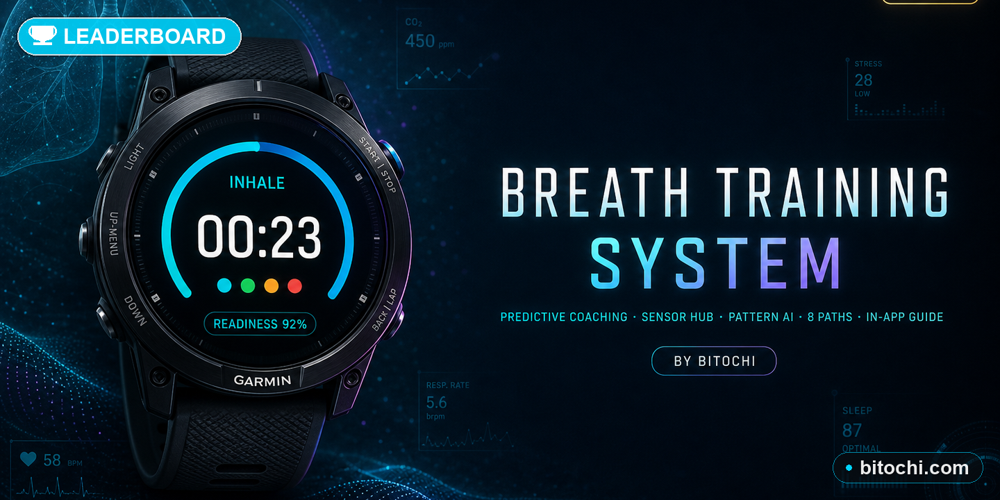

Breath Training System brings serious breathwork to your Garmin watch — CO₂ and O₂ tolerance tables, guided apnea holds, Wim Hof power breathing, Box Breathing, and Pranayama, all combined with real-time sensor data from your watch's heart rate, body battery, and stress monitors. Eight structured multi-week programs take you from beginner to peak breath-hold performance.
Pick a program and follow a daily session plan. The app tracks your progress, consistency, and personal bests across each week — so you can see yourself improve over time.
Available on Garmin Connect IQ · Works on 100+ Garmin watch models
Download Free on Connect IQ